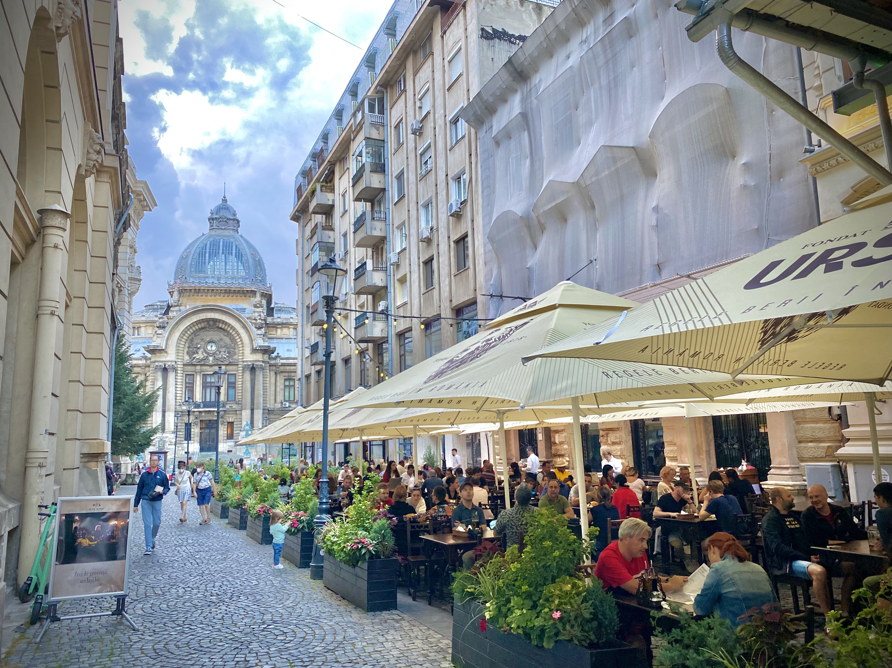
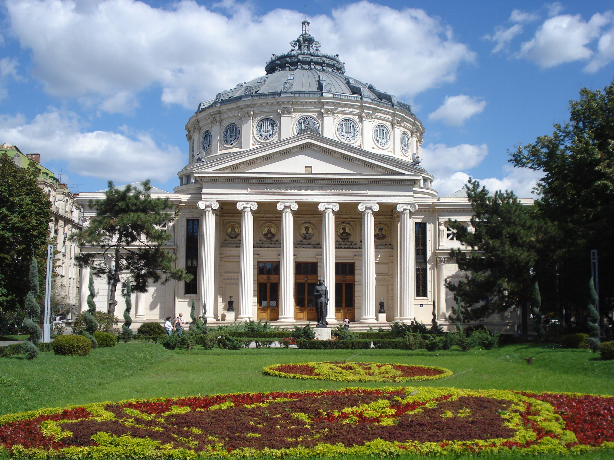
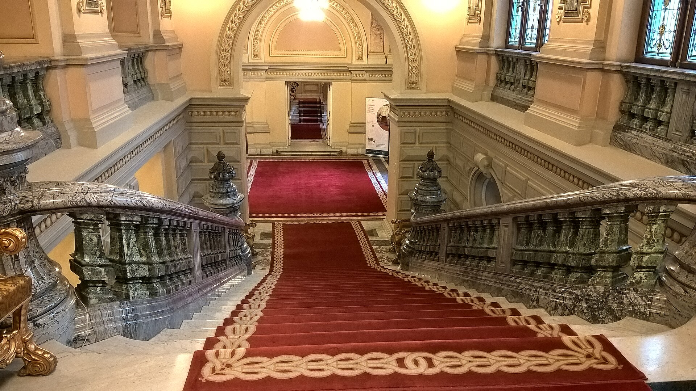

Introduction
Bucharest is my favorite city, and it's also where both of my parents were born. The city has a lot to offer visitors, including historic buildings, beautiful architecture, parks, shopping centers, and restaurants. One of my favorite things about Bucharest is how it mixes older buildings with modern shopping areas and entertainment. There are so many interesting places to explore, which makes it a great city to visit.
Interesting Facts About Bucharest
- Bucharest is the capital and largest city of Romania with a population of around 1.7 million people.
- Romanian is the official language.
- The Dâmbovița River runs through Bucharest.
- Bucharest has hot summers and cold winters.
- The city is sometimes called "Little Paris" because of its historic architecture.
Old Town Bucharest

The Old Town is one of the most popular places to visit in Bucharest. It has lots of historic buildings, cobblestone streets, restaurants, clubs, and bars. Visitors can walk around, check out local shops, and try traditional Romanian food. This is one of the best places in the city to enjoy the nightlife.
Romanian Athenaeum

The Romanian Athenaeum is one of the most beautiful historic buildings in Bucharest. It's known for its large dome and beautiful architecture. It's also home to the George Enescu Philharmonic Orchestra and hosts classical music concerts. Visitors can enjoy a concert or take a tour of the building when tours are available.
Arcul de Triumf

The Arcul de Triumf is one of the most popular landmarks in Bucharest. It was built to celebrate Romania's victory in World War I and looks a lot like the Arc de Triomphe in Paris. It's located near a large park and is a great place to stop and take pictures. Visitors can go to the top and get a nice view of the city.
Palatul Cotroceni

Palatul Cotroceni is one of the most historic buildings in Bucharest and is where the Romanian president works. It used to be a royal palace where members of Romania's royal family lived. The building has beautiful architecture and large gardens. Visitors can tour parts of the palace and explore the Cotroceni National Museum.